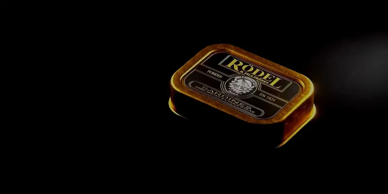
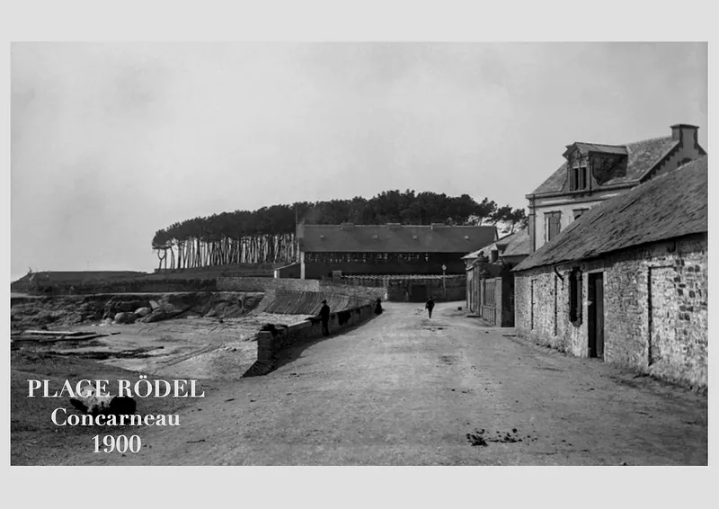
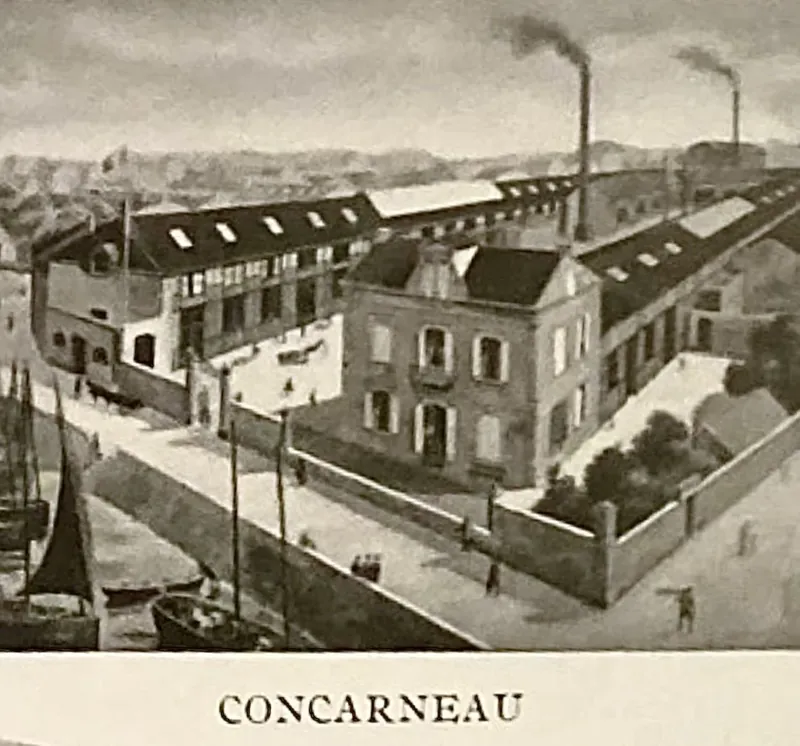
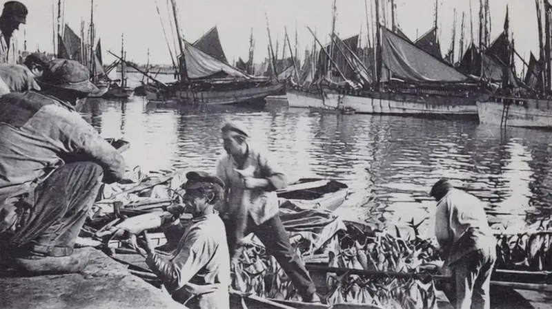
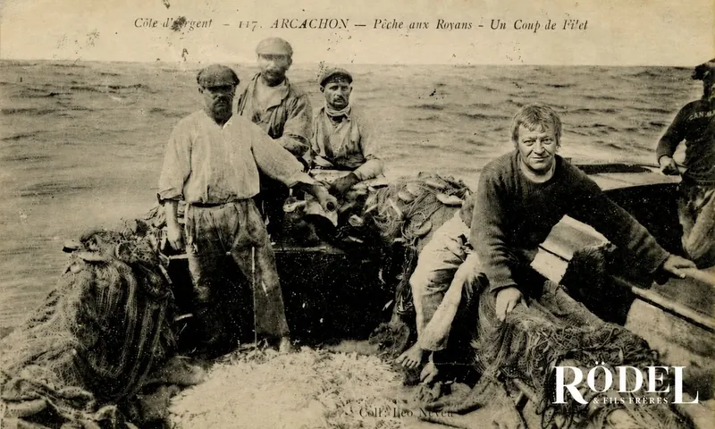
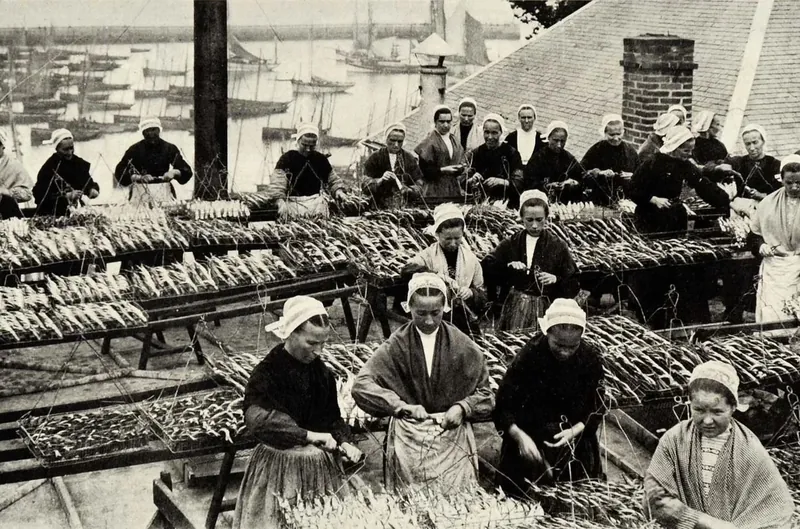
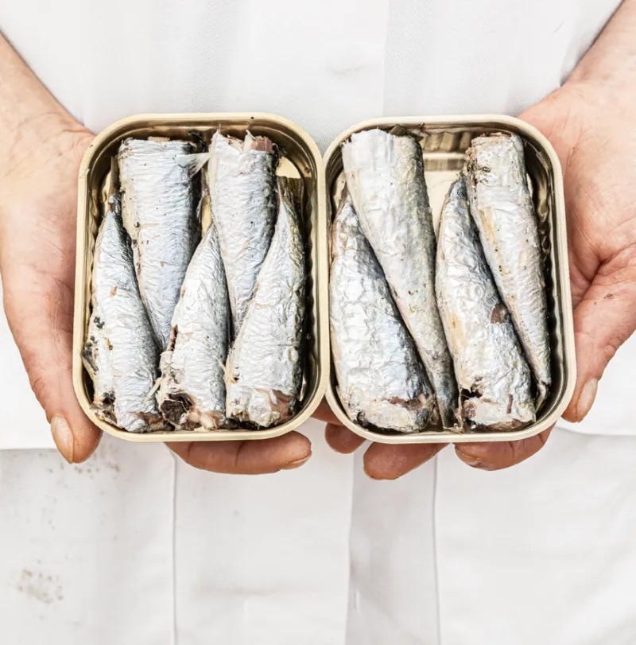
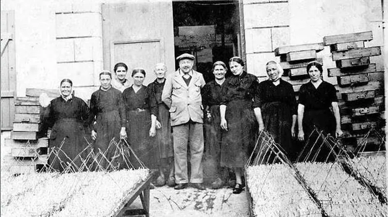
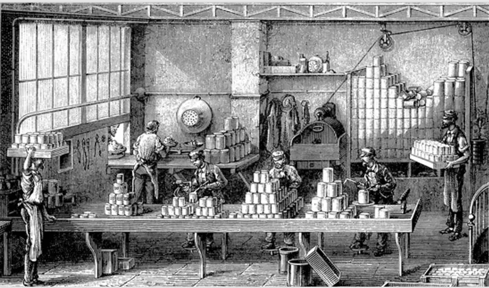

Les sardines Rödel
Le secret
de la perfection.
Chaque matin, un petit bateau de pêche part vers un lieu soigneusement choisi et rentre le jour même ; le poisson est travaillé encore frais.

De la mer à la boîte
Huit règles, une sardine.
-

Plage Rödel, Concarneau, 1900 · animé par IA 01 / 08La saison
Notre saison de pêche ne dure que de mai à octobre, quand les sardines sont au meilleur de leur valeur nutritive et naturellement les plus riches en bonnes graisses. Nous respectons leur période de reproduction, et le cycle immuable du renouvellement de la vie.
Mai — octobre
-
Les zones de pêche citées par la maison. Carte tracée d’après OpenStreetMap. 02 / 08Les eaux
Nos sardines sont pêchées exclusivement dans les eaux protégées des côtes bretonnes : la baie de Concarneau, les eaux de l’archipel des Glénan et la pointe de Trévignon.
-

Concarneau · animé par IA 03 / 08La conserverie
Notre conserverie se trouve à Concarneau, surnommée la capitale de la sardine. Chaque mois d’août, la ville accueille la célèbre Fête des Filets Bleus.
-

Pêcheurs au travail sur le quai, photographie d’archive · animé par IA 04 / 08Les pêcheurs
Les pêcheurs locaux pratiquent la pêche traditionnelle à la senne tournante, la bolinche. Nous travaillons exclusivement avec neuf familles de pêcheurs de Concarneau.
Neuf familles
-

Arcachon, les pêcheurs · animé par IA 05 / 08Le jour même
Nous garantissons que les sardines pêchées le matin sont mises en boîte le jour même. Elles ne sont jamais congelées : nous n’utilisons que du poisson frais.
Jamais congelées
-

Ouvrières préparant les sardines dans une conserverie, photographie d’archive · animé par IA 06 / 08À la main
Chaque sardine est nettoyée à la main et soigneusement rangée dans la boîte. Avant la mise en boîte, les sardines sont frites trente secondes pour saisir la surface et préserver la fermeté de la chair.
Trente secondes
-

Deux boîtes ouvertes de sardines Rödel tenues dans les mains · animé par IA 07 / 08Les ingrédients
Nous n’utilisons que des ingrédients de premier choix, dont l’huile d’olive, le sel et les citrons, issus d’exploitations rigoureusement sélectionnées.
-

Le personnel posant devant une usine Rödel · animé par IA 08 / 08Jamais de compromis
La qualité de notre produit comptera toujours plus que son coût. Nous ne faisons jamais de compromis.
Sur chaque couvercle
Rödel indique sur chaque couvercle quand, par qui et où le poisson a été pêché.

Par ailleurs, l’entrée à la conserverie est presque aussi sélective que l’admission à Eton : 100 % des candidates doivent être bretonnes, c’est-à-dire sauvages, de la bonne taille et d’une teneur en gras optimale.
Sur le plan moral, le Livre des recettes et instructions Rödel est sans équivoque : « Les sardines congelées et surgelées, quelles que soient leur qualité apparente et leur présentation, seront systématiquement refusées. Cette règle ne souffre aucune exception. »
Seules les sardines fraîchement recrutées pendant les cinq mois de la saison de pêche seront autorisées à franchir la barrière de la conserverie. Dotée d’un tel pedigree, la sardine Rödel devient la compagne indispensable des moments choisis.
La sardine pilchard d’origine